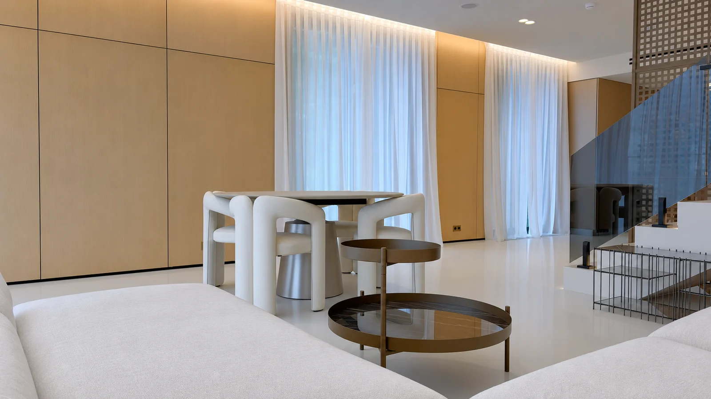
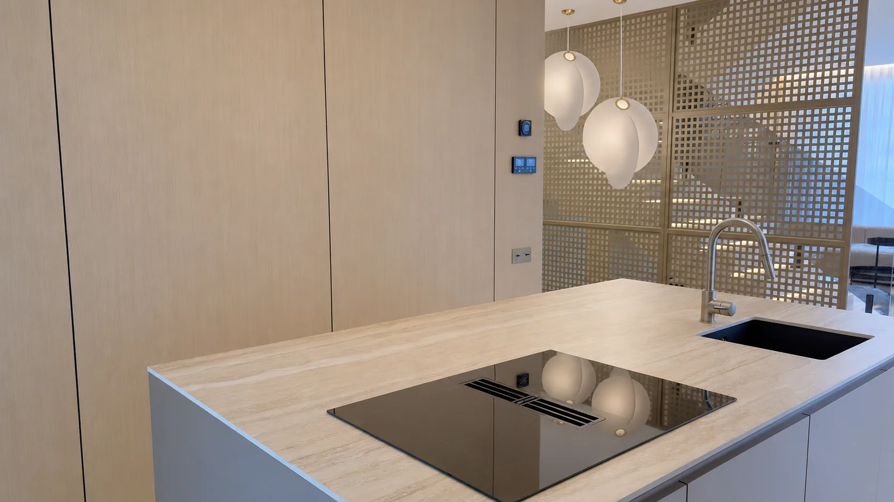
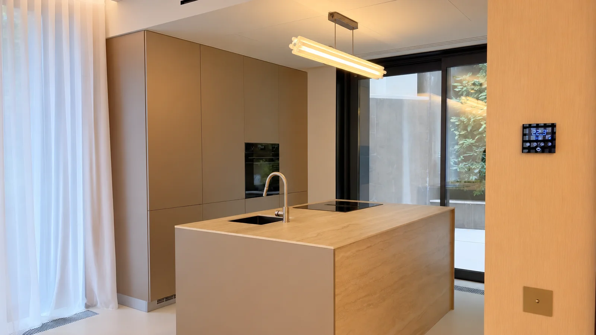
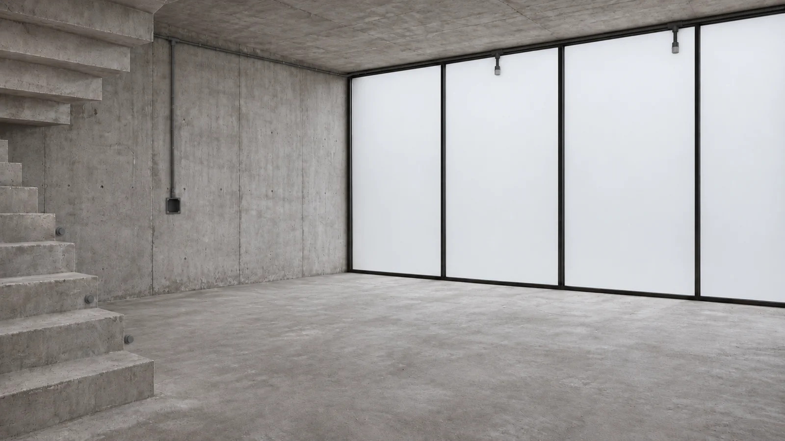
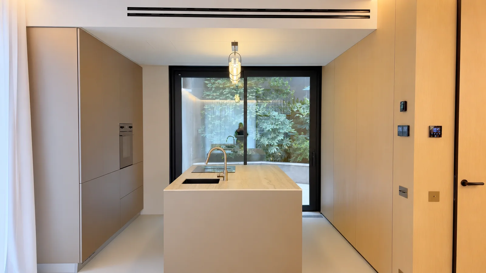

01Планировка
У каждого дома свой ритм
Кому-то нужна большая кухня для встреч с друзьями, кому-то — тихий кабинет или отдельная детская. Обсуждаем ваши пожелания, делаем обмеры, разрабатываем планировку и готовим визуализации и рабочие чертежи.

От пустого пространства до готового интерьера — с вниманием к вашим пожеланиям и каждой детали.
Создаём и реализуем интерьеры для вашей жизни.
Красота замысла.
Точность воплощения.
Разрабатываем интерьеры и выполняем ремонт квартир и домов в Сочи — от дизайн-проекта и инженерных работ до чистовой отделки.
Сначала обсуждаем ваши пожелания: каким вы видите будущий дом, что для вас важно в планировке, материалах и оформлении. Разрабатываем проект, согласуем сроки и организуем работы. Контролируем качество каждого этапа. Стоимость рассчитываем заранее и фиксируем в смете до начала ремонта.
Начать с консультации ↗
Одна команда ведёт ваш проект —
от первых решений до готового интерьера.
Состав работ, бюджет и сроки
согласуем заранее.
От инженерной основы
до финишной отделки.
Интерьеры квартир и домов.
Разные задачи, индивидуальные решения.
Кому-то нужна большая кухня для встреч с друзьями, кому-то — тихий кабинет или отдельная детская. Обсуждаем ваши пожелания, делаем обмеры, разрабатываем планировку и готовим визуализации и рабочие чертежи.
Заранее решаем, где будут храниться одежда, чемоданы и бытовая техника. Проектируем гардеробные и встроенные шкафы, устанавливаем кухню и мебель, подключаем и проверяем технику.

Для готовки, чтения, работы и отдыха нужен разный свет. Подбираем светильники, продумываем расположение выключателей и проверяем, как работают сценарии освещения после монтажа.

Подбираем отделку и сантехнику с учётом влажности, износа и ухода. Согласуем стоимость, заказываем материалы и организуем доставку по графику. Готовим стены, полы и потолки, выполняем чистовую отделку по проекту.

Увязываем инженерные системы с планировкой и мебелью. По чертежам прокладываем электрику, водоснабжение и канализацию, монтируем отопление, вентиляцию и кондиционирование. Проверяем системы до отделки и оставляем доступ для обслуживания.

Фиксируем состав работ, стоимость и ответственность команды.
Согласуем график ремонта с учётом объёма работ и поставок материалов.
Если вы захотите что-то изменить, сначала обсудим, как это повлияет на стоимость и сроки. Дополнительные работы выполняем после вашего согласования.

Выполняем ремонт квартир и частных домов любой площади в Сочи.
Да, пришлите проект. Изучим чертежи и состав работ, после чего обсудим возможность реализации.
Да. Согласуем проект, материалы и смету дистанционно, организуем работы на объекте. Решения, которые требуют вашего участия, обсудим по телефону или видеосвязи.
Оплата производится на расчётный счёт компании. Суммы и порядок платежей указываем в договоре.
Сроки определяем после осмотра объекта и согласования проекта. Учитываем объём работ и сроки поставки материалов и оборудования. График ремонта фиксируем в договоре.